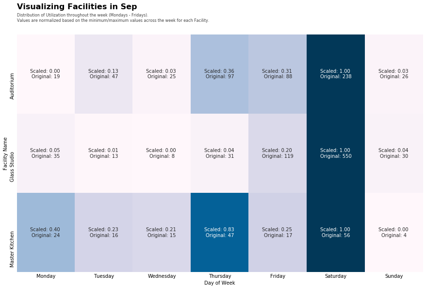

What is this?
This is a repository of helpful snippets to generate illustrations in python.
Repo Index
- Annotated Heat Maps
- Polar Plots Redux
Annotated Heatmaps
Create annotated heatmaps that have scaled, and unscaled values on each line.

Heatmap generated using Seaborn
Sample code here
if scale:
df_copy=df.copy()
ss = MinMaxScaler()
scaled_features = ss.fit_transform(df) # scaling is done to allow comparisons across features
df[df.columns] = scaled_features
# Supplementary text in the case where scaling is used
sup_text = '\nValues are normalized based on the minimum/maximum values across the week for each Facility.'
# labels in each cell
labels = (np.asarray(["Scaled: {0:.2f} \nOriginal: {1:.0f}".format(original, scaled)
for original, scaled in zip((df.to_numpy()).flatten(),
(df_copy.to_numpy()).flatten())]
)).reshape(df.shape).T
else:
sup_text = ''
font_title = {'family': 'sans-serif',
'weight': 'bold',
'size': 16,
}
# We use ax parameter to tell seaborn which subplot to use for this plot
fig = plt.figure(figsize=(15,9))
# generate our heatmap
ax = sns.heatmap(df.T, cmap="PuBu", annot=labels if scale else True, fmt='' if scale else '.0f',cbar=False)
ax.tick_params(axis='both', which='both', length=0)
ax.set_xlabel('Day of Week')
ax.set_ylabel('Facility Name')
# Main title
ax.text(x=0, y=1.1, s=f'Visualizing Facilities in {monthDict[month]}', fontsize=16, weight='bold', ha='left', va='bottom', transform=ax.transAxes)
# Supplementary text just below the main title
ax.text(x=0, y=1.05, s='Distribution of Utilization throughout the week (Mondays - Fridays).' + sup_text, fontsize=8, alpha=0.75, ha='left', va='bottom', transform=ax.transAxes)
plt.show()
Polar Plots Redux
Plotting events across a clock-like dimensional axis (Polar)